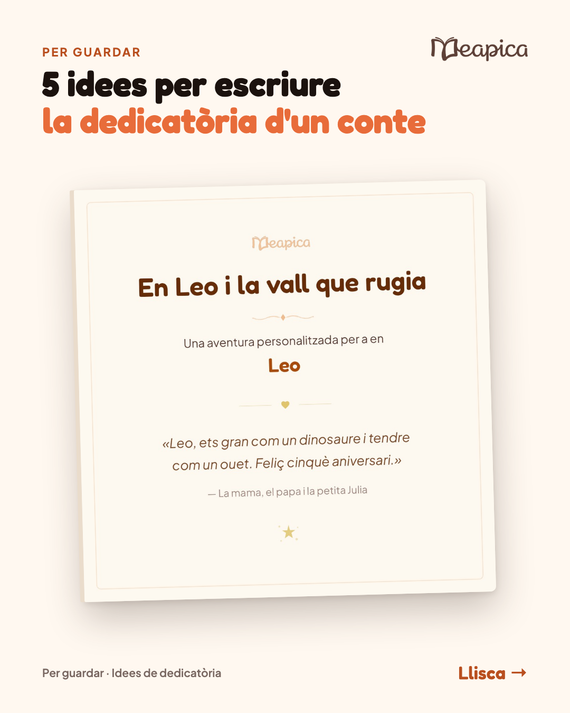
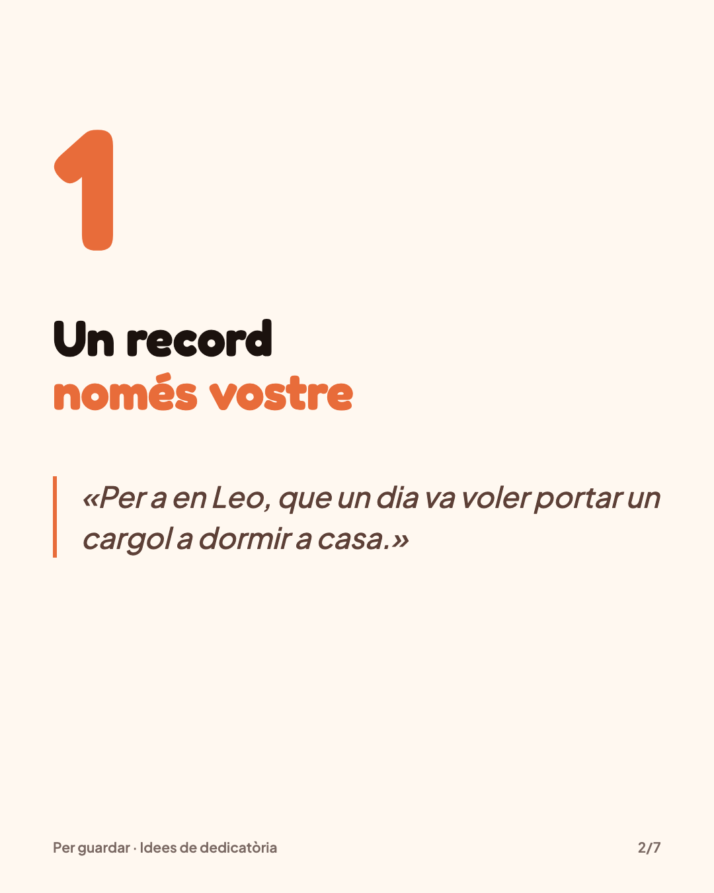
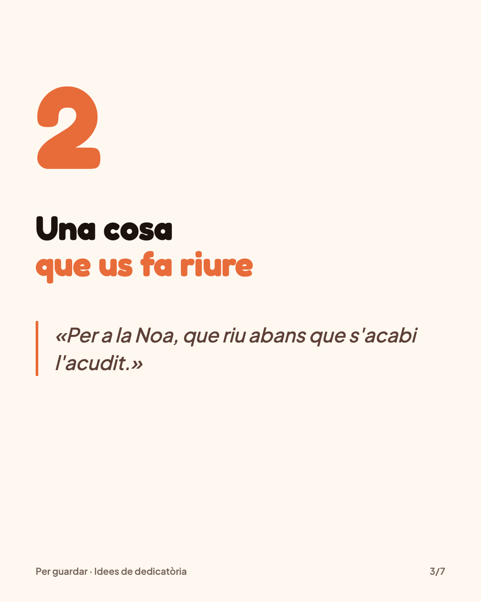
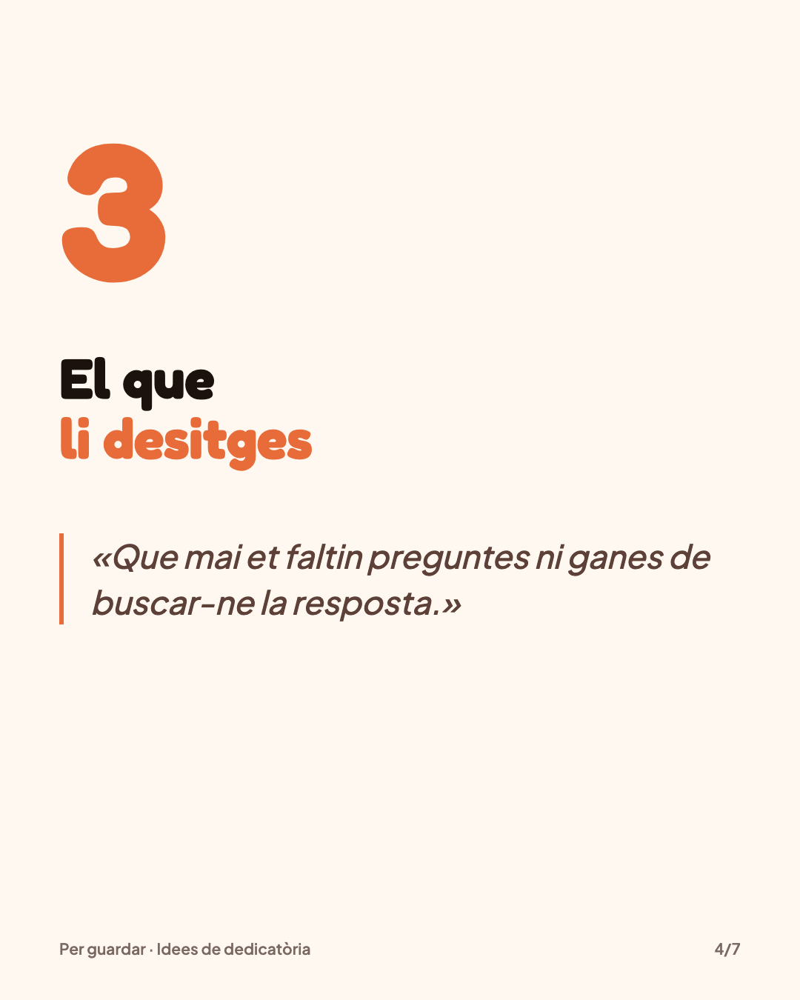
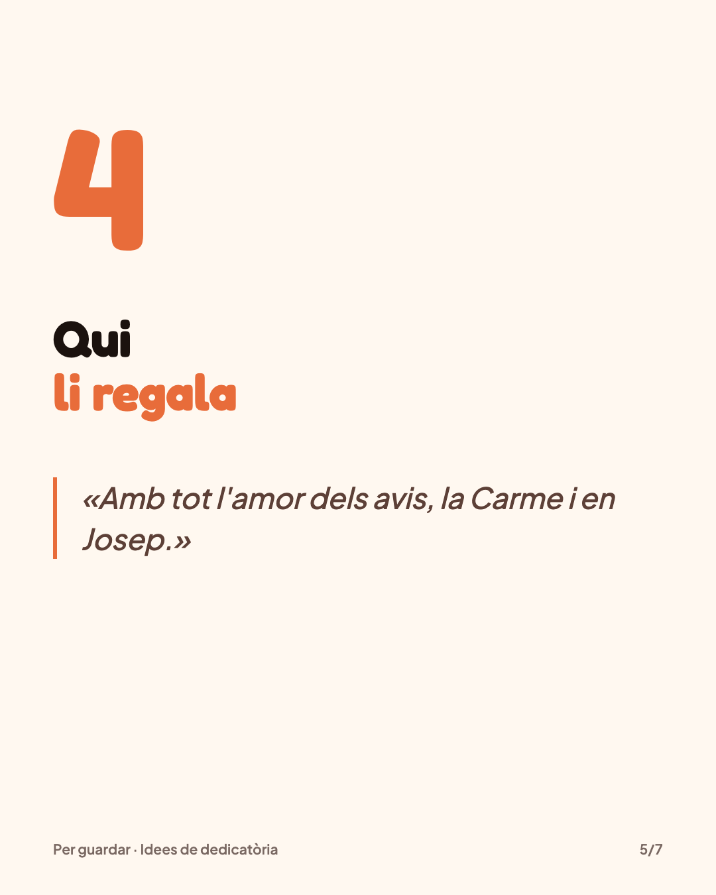
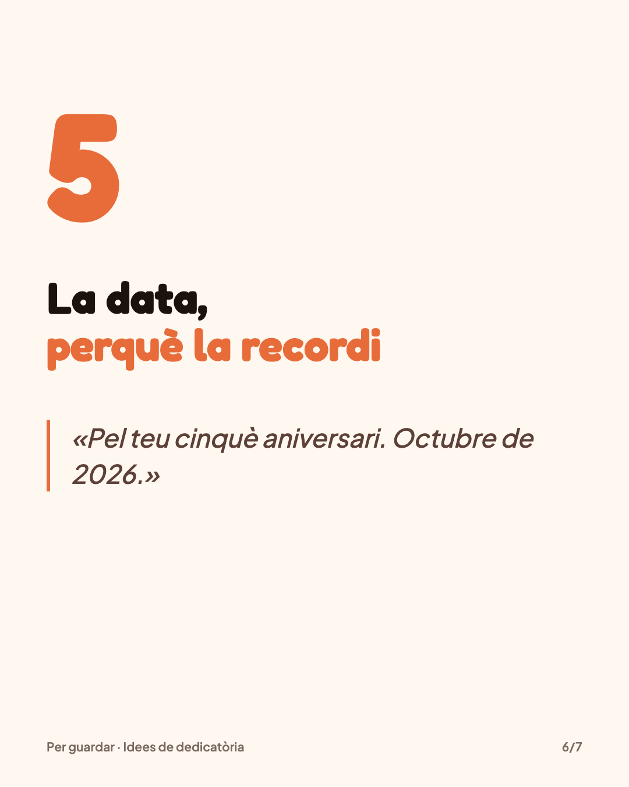
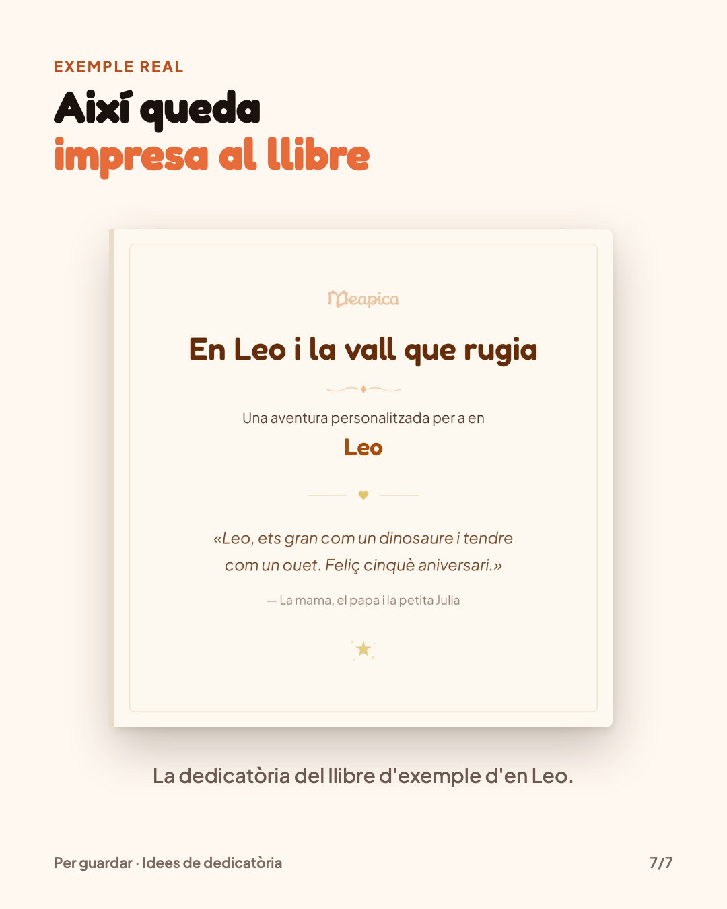

Meapica · posts programados
domingo, 4 de octubre · 19:30 ES
Cuento para dormir en 1 minuto: Aitana y la Perla Cantarina
Instagram · TikTok · Facebook · YouTube Shorts · Pinterest Etiqueta de voz sintética: sí YouTube: contenido para niños
Cuento para dormir en un minuto: «Aitana y la Perla Cantarina». Baja la luz y dale al play. Si esta noche funciona, guárdalo para mañana. Versión corta de uno de nuestros libros de ejemplo. En el suyo, la protagonista lleva su nombre: link en la bio. #cuentosparadormir #cuentosinfantiles #cuentoscortos #leerenfamilia
Cuento para dormir en un minuto: Aitana y la Perla Cantarina. Guárdalo para esta noche. Versión corta de un libro de ejemplo de meapica.shop #cuentosparadormir #cuentosinfantiles #cuentoscortos
lunes, 5 de octubre · 20:30 ES
Cuento para dormir en 1 minuto: Noa y la llave de flor
Instagram · TikTok · Facebook · YouTube Shorts · Pinterest Etiqueta de voz sintética: sí YouTube: contenido para niños
Cuento para dormir en un minuto: «Noa y la llave de flor». Baja la luz y dale al play. Si esta noche funciona, guárdalo para mañana. Versión corta de uno de nuestros libros de ejemplo. En el suyo, la protagonista lleva su nombre: link en la bio. #cuentosparadormir #cuentosinfantiles #cuentoscortos #leerenfamilia
Cuento para dormir en un minuto: Noa y la llave de flor. Guárdalo para esta noche. Versión corta de un libro de ejemplo de meapica.shop #cuentosparadormir #cuentosinfantiles #cuentoscortos
martes, 6 de octubre · 20:30 CA
Què regalar a un nen de 5 anys que ja ho té tot
Instagram · TikTok · Facebook · YouTube Shorts · Pinterest Etiqueta de voz sintética: sí
Què regalar a un nen de 5 anys que ja ho té tot? Un conte on el protagonista és ell. La seva cara pintada a l'aquarel·la a cada pàgina i l'aventura que tries tu. Abans de pagar en veus la portada i les primeres pàgines. Des de 34,90 € IVA inclòs. Exemple real: el llibre d'en Leo. Envia-ho a qui estigui buscant regal. Crea el seu: enllaç a la bio. #regalsperanens #contepersonalitzat #contesinfantils #regalsoriginals
Què regalar a un nen de 5 anys que ja ho té tot? Un conte on el protagonista és ell, amb la seva cara pintada a cada pàgina. Exemple real: el llibre d'en Leo. meapica.shop #regalsperanens #contepersonalitzat #contesinfantils
miércoles, 7 de octubre · 20:30 CA
5 idees per escriure la dedicatòria d'un conte







Desliza: 7 imágenes
Instagram · TikTok · Facebook · Pinterest
5 idees per escriure la dedicatòria d'un conte, o de qualsevol llibre que regalis. Un record vostre, una cosa que us fa riure, el que li desitges, qui li regala i la data. Desa-ho per al proper aniversari. Als nostres contes, la dedicatòria s'imprimeix a la primera pàgina tal com l'escrius: enllaç a la bio. #dedicatoria #regalsperanens #contesinfantils #llegirjunts
5 idees per escriure la dedicatòria d'un conte
5 idees per escriure la dedicatòria d'un conte o de qualsevol llibre que regalis. Desa-ho per al proper aniversari. Més a meapica.shop #dedicatoria #regalsperanens #contesinfantils
jueves, 8 de octubre · 20:30 ES
¿Por qué tu peque pide el mismo cuento 20 veces?
Instagram · TikTok · Facebook · YouTube Shorts · Pinterest Etiqueta de voz sintética: sí
¿Por qué tu peque pide el mismo cuento veinte veces? Porque saber lo que viene le da calma, y en cada lectura pilla una palabra nueva. Repetir también es leer. Envíaselo a quien vaya ya por la lectura número veinte. Ilustraciones de «Lucía y el sueño perdido», uno de nuestros libros de ejemplo: link en la bio. #cuentosinfantiles #animacionalalectura #crianza #leerenfamilia
¿Por qué tu peque pide el mismo cuento veinte veces? Saber lo que viene le da calma. Repetir también es leer. Ilustraciones de un libro de ejemplo de meapica.shop #cuentosinfantiles #animacionalalectura #crianza
viernes, 9 de octubre · 20:30 ES
Así empieza un cuento para niños de 7 años: Martí y la luz guardada
Instagram · TikTok · Facebook · YouTube Shorts · Pinterest Etiqueta de voz sintética: sí YouTube: contenido para niños
Así empieza un cuento para un niño de 7 años: «Martí y la luz guardada». Un frasco vacío, un gorrión en la ventana y una chispa que busca puerta. ¿Tú qué guardarías en el frasco? Primeras páginas de uno de nuestros libros de ejemplo. El suyo empieza con su nombre: link en la bio. #cuentosinfantiles #cuentosparadormir #librosinfantiles #leerenfamilia
Así empieza un cuento para un niño de 7 años: Martí y la luz guardada. ¿Tú qué guardarías en el frasco? Primeras páginas de un libro de ejemplo de meapica.shop #cuentosinfantiles #cuentosparadormir #librosinfantiles
sábado, 10 de octubre · 11:00 CA
On començaria la seva aventura? Bosc, dinosaures, pirates, espai o castell
Instagram · TikTok · Facebook · YouTube Shorts · Pinterest
Bosc màgic, dinosaures, pirates, l'espai o un castell: on començaria la seva aventura? Digues-nos-ho als comentaris. Il·lustracions dels nostres llibres d'exemple. Tria el seu món: enllaç a la bio. #contesinfantils #contepersonalitzat #llegirjunts #regalsperanens
Bosc màgic, dinosaures, pirates, l'espai o un castell: on començaria la seva aventura? Il·lustracions dels llibres d'exemple de meapica.shop #contesinfantils #contepersonalitzat #llegirjunts
domingo, 11 de octubre · 19:30 CA
Conte per anar a dormir en 1 minut: En Leo i la vall que rugia
Instagram · TikTok · Facebook · YouTube Shorts · Pinterest Etiqueta de voz sintética: sí YouTube: contenido para niños
Conte per anar a dormir en un minut: «En Leo i la vall que rugia». Abaixa el llum i posa'l. Si aquesta nit funciona, desa'l per a demà. Versió curta d'un dels nostres llibres d'exemple. Al seu, el protagonista porta el seu nom: enllaç a la bio. #contesperanaradormir #contesinfantils #contesencatala #llegirjunts
Conte per anar a dormir en un minut: En Leo i la vall que rugia. Desa'l per a aquesta nit. Versió curta d'un llibre d'exemple de meapica.shop #contesperanaradormir #contesinfantils #contesencatala